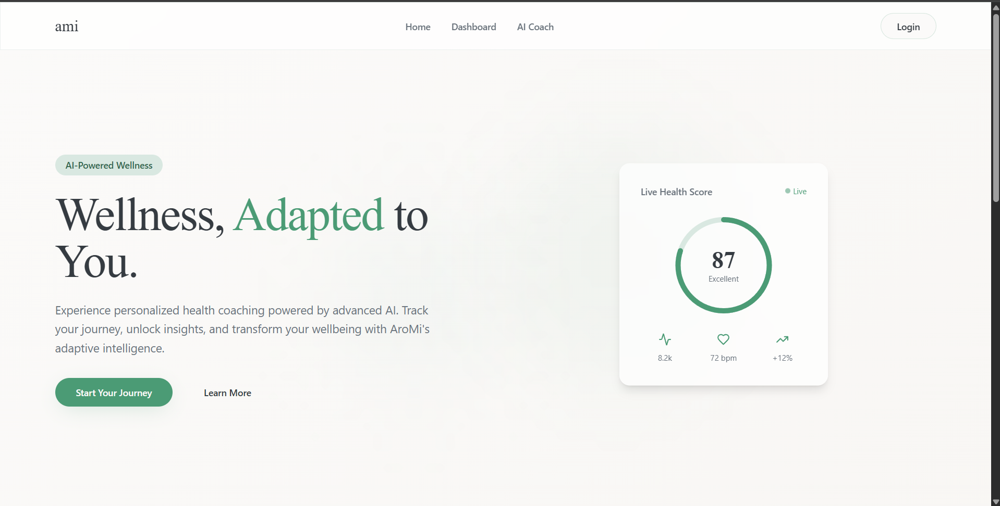

Transforms static health metrics into a dynamic, AI-driven wellness perspective

Standard fitness and wellness apps log statistics: step counts, hours of sleep, heart rate metrics, and water intake. However, looking at lists of isolated numbers does not give users a clear context of their overall health. Users need qualitative advice explaining how their activity habits interact with one another.
Ami Wellness was built to translate static logs into conversational perspectives. By processing user telemetry data, it runs evaluations that explain health correlations and suggest specific habit corrections.
UserData collects inside Next.js client forms, syncing instantly to PostgreSQL tables before feeding prompts to Llama-3 models hosted on Groq Cloud servers.
TypeScript dashboard form
Real-time DB write log
Llama-3 query processing
Custom wellness dashboard cards
All database mutations run under row-level security (RLS) layers inside Supabase, protecting private health records from unauthorized API read requests.
Designed to convert raw spreadsheet numbers into comprehensive daily summaries.
Handling free-form text outputs from LLMs makes it difficult to parse advice arrays into structured dashboard panels and widgets.
Models occasionally output conversational remarks, markdown tables, or invalid JSON, causing parsing failures on the Next.js client during dashboard updates.
We implemented JSON mode flags on the Groq API call, forcing Llama-3 to respond strictly within a defined object template. In the Next.js server route, we run the incoming payload through a Zod schema parser to validate object types (e.g. integer scores, text arrays) before returning the response to the client, guaranteeing crash-free rendering of advice cards.
The resulting AI feedback loop delivers responsive, reliable health insights under high server security.